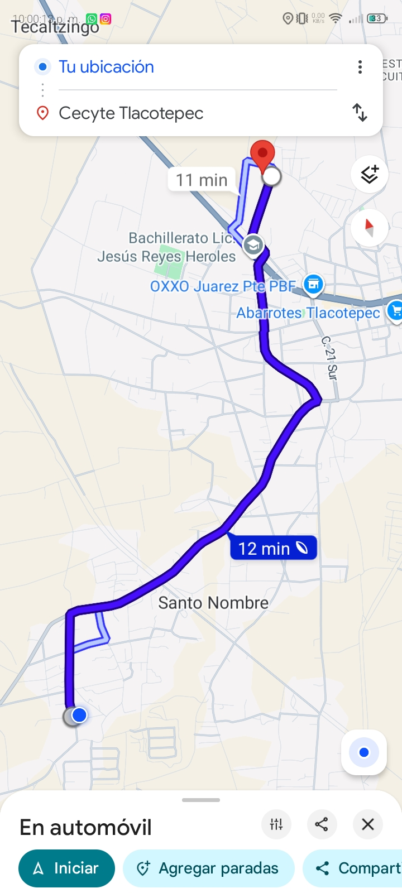

How can i get to CECyTE? / ¿Como puedo llegar a CECyTE?
English:
1.From the central park, turn toward the southwest corner until you reach the road.
2.Continue on that same road until you reach the bypass.
3.Turn right that small block.
4.Turn left until you reach the first intersecting street.
5.Turn right on that street until you reach in across from the CECyTE Tlacotepec facilities.
Español:
1.Desde el parque gire hacia la esquina suroeste.
2.Continue por esa la carretera hasta llegar a el libramiento.
3.Gire a la derecha en esa pequeña cuadra.
4.Gire a la izquierda hasta llegar a la primera calle.
5.Gire a la derecha en esa calle hasta llegar frente a las instalaciones de CECyTE Tlacotepec.
